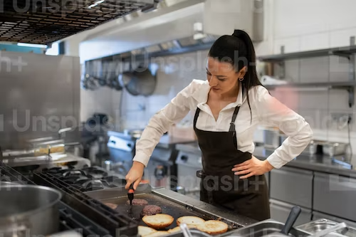

Nos chefs star

Mélanie
Melanie est une chef spécialisé en cuisine Andalouse. Basé sur Paris, elle saura mettre le joie dans votre assieste et dans votre cuisine

Cecile
Cécile, ancienne chef dans un prestigieux restaurant de fruits de mer, vous presenteras des plats sophistiqués pour vos soirées les plus habillés

Augustin
La cuisine d'Augustin, principalement basé sur la sublimation des produits disponible chez vous, vous transmettra son originalité et son sourire a travers toute la France